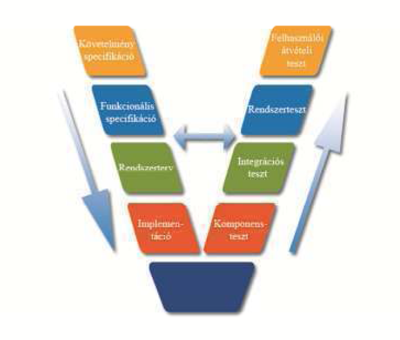
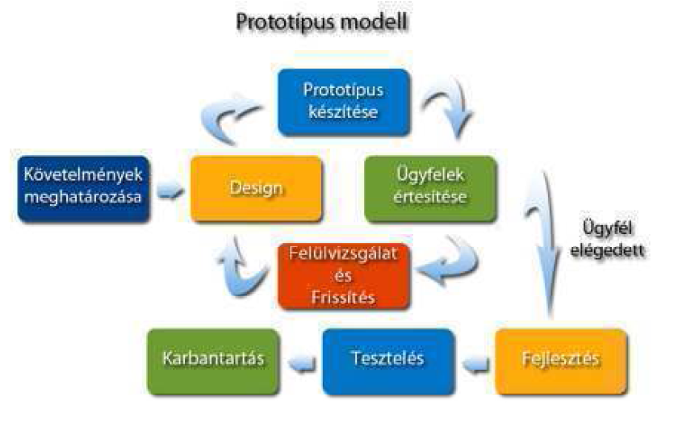
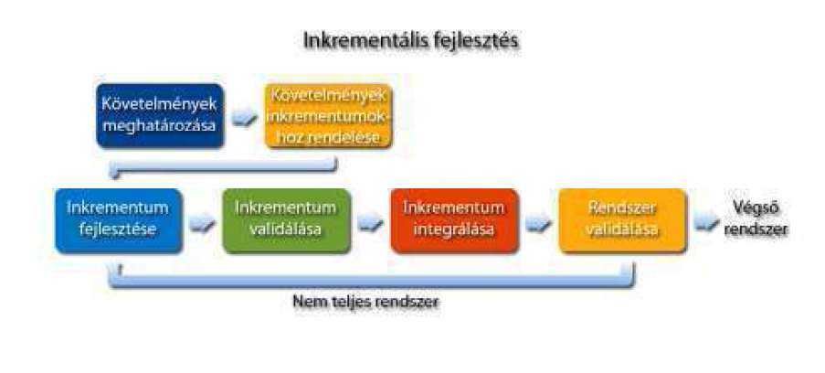
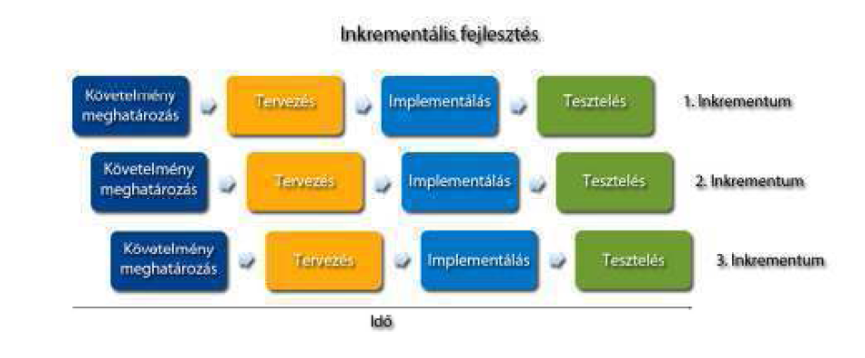
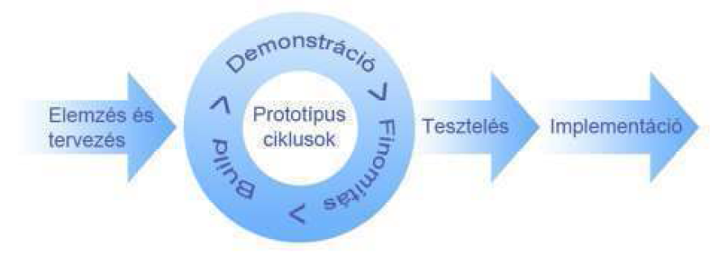
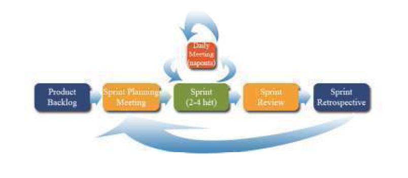
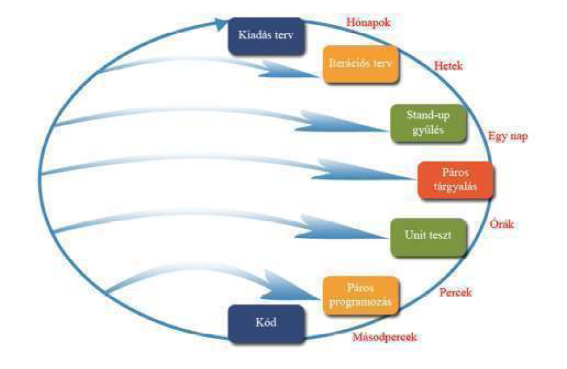

A m√≥dszertanok feladata, hogy meghat√°rozz√°k, hogy a szoftver √©letciklus egyes l√©p√©sei milyen sorrendben k√∂vetik egym√°st, milyen dokumentumokat, szoftver term√©keket kell elő√°ll√≠tani √©s hogyan. Egy nagy szab√°lyk√∂nyvre eml√©keztetnek, ami pontosan le√≠rja, hogyan kell szoftvert „főzni”. Ha betartjuk a receptet, akkor egy √°tlagos minős√©gű szoftvert kapunk, de az √°tlagos minős√©g garant√°lt.
A k√∂vetkezőkben azokat a m√≥dszertanokat ismertetj√ºk, amelyek k√ºl√∂n√∂sen nagy hangs√∫lyt fektetnek a tesztel√©sre.
A V-modell (angolul: V-Model vagy Vee Model) a nev√©t onnan kapta, hogy k√©t sz√°ra van √©s √≠gy egy V betűh√∂z hasonl√≠t. Az egyik sz√°ra megegyezik a v√≠zes√©s modellel. Ez a fejleszt√©si sz√°r. A m√°sik sz√°ra a l√©trej√∂vő term√©kek tesztjeit tartalmazza. Ez a tesztel√©si sz√°r. Az egy szinten l√©vő fejleszt√©si √©s tesztel√©si l√©p√©sek √∂sszetartoznak, azaz a tesztel√©si l√©p√©s a fejleszt√©si l√©p√©s sor√°n l√©trej√∂tt dokumentumokat haszn√°lja, vagy a l√©trej√∂tt term√©ket teszteli. Ennek megfelelően az elő√≠rt fejleszt√©si √©s tesztel√©si l√©p√©sek a k√∂vetkezők:

A V-modell a v√≠zes√©s modell kieg√©sz√≠t√©se tesztel√©ssel. Ez azt jelenti, hogy elősz√∂r v√©gre kell hajtani a fejleszt√©s l√©p√©seit, ezut√°n j√∂nnek a tesztel√©s l√©p√©sei. Ha valamelyik teszt hib√°t tal√°l, akkor vissza kell menni a megfelelő fejleszt√©si l√©p√©sre.
A V-modell hasonl√≥an a v√≠zes√©s modellhez nagyon merev, de alkalmaz√≥i kev√©sb√© ragaszkodnak ehhez a merevs√©ghez, mint a v√≠zes√©s modell alkalmaz√≥i. Ennek megfelelően jobban elterjedt. Fő jellemzője a teszt k√∂zponti szerepe.
Egy tipikus V-modell v√°ltozatban elősz√∂r felm√©rj√ºk az ig√©nyeket √©s elk√©sz√≠tj√ºk a k√∂vetelm√©ny specifik√°ci√≥t. Ezt √ºzleti elemzők v√©gzik, akik a megrendelő √©s a fejlesztők fej√©vel is k√©pesek gondolkozni. A k√∂vetelm√©ny specifik√°ci√≥ban j√≥l meghat√°rozott √°tv√©teli krit√©riumokat fogalmaznak meg, amik lehetnek funkcion√°lis √©s nemfunkcion√°lis ig√©nyek is. Ez lesz majd az alapja a felhaszn√°l√≥i √°tv√©teli tesztnek (User Acceptance Test, UAT). Mag√°t a k√∂vetelm√©ny specifik√°ci√≥t is tesztelik. A felhaszn√°l√≥k t√ºzetesen √°tn√©zik az √ºzleti elemzők seg√≠ts√©g√©vel, hogy t√©nylegesen minden ig√©ny√ºket lefedi-e a dokumentum. Ez l√©nyeges r√©sze a modellnek, mert a folyamatban visszafel√© haladni nem lehet, √©s ha rossz a k√∂vetelm√©ny specifik√°ci√≥, akkor nem az ig√©nyeknek megfelelő szoftver fog elk√©sz√ºlni. Ezzel szemben p√©ld√°ul a protot√≠pus modellben lehet pongyola az ig√©nyfelm√©r√©s, mert az a protot√≠pusok sor√°n √∫gyis pontos√≠t√°sra ker√ºl.
Ezut√°n k√∂vetkezik a funkcion√°lis specifik√°ci√≥ elk√©sz√≠t√©se, amely le√≠rja, hogyan kell majd műk√∂dnie a szoftvernek. Ez lesz a rendszerteszt alapja. Ha a funkcion√°lis specifik√°ci√≥ azt √≠rja, hogy a „V√°s√°rol gomb megnyom√°s√°ra ki kell √≠rni a kos√°rban l√©vő √°ruk √©rt√©k√©t”, akkor a rendszertesztben lesz egy vagy t√∂bb teszteset, amely ezt teszteli. P√©ld√°ul, ha √ºres a kos√°r, akkor az √°rnak null√°nak kell lennie.
Ezut√°n k√∂vetkezik a rendszerterv, amely le√≠rja, hogy az egyes funkci√≥kat hogyan, milyen komponensekkel, oszt√°lyokkal, met√≥dusokkal, adatb√°zissal fogjuk megval√≥s√≠tani. Ez lesz a komponens teszt egyik alapja. A rendszerterv le√≠rja tov√°bb, hogy a komponensek hogyan műk√∂dnek egy√ºtt. Ez lesz az integr√°ci√≥s teszt alapja.
Ezut√°n a rendszertervnek megfelelően k√∂vetkezik az implement√°ci√≥. Minden met√≥dushoz egy vagy t√∂bb unit-tesztet kell k√©sz√≠teni. Ezek alapja nem csak az implement√°ci√≥, hanem a rendszerterv is. A nagyobb egys√©geket, oszt√°lyokat, al- √©s főfunkci√≥kat is komponens teszt al√° kell vetni az implement√°ci√≥ √©s a rendszerterv alapj√°n.
Ha ezen sikeresen t√∫l vagyunk, akkor az integr√°ci√≥s teszt k√∂vetkezik a rendszerterv alapj√°n. Ha itt probl√©m√°k mer√ºlnek fel, akkor visszamegy√ºnk a V betű m√°sik sz√°r√°ra a rendszertervhez. Megn√©zz√ºk, hogy a hiba a rendszertervben vagy az implement√°ci√≥ban van-e. Ha kell, megv√°ltoztatjuk a rendszertervet, majd az implement√°ci√≥t is.
Az integr√°ci√≥s teszt ut√°n j√∂n a rendszerteszt a funkcion√°lis specifik√°ci√≥ alapj√°n. Hasonl√≥an, hiba eset√©n a V betű m√°sik sz√°r√°ra megy√ºnk, azaz visszal√©p√ºnk a funkcion√°lis specifik√°ci√≥ elk√©sz√≠t√©s√©re. Majd j√∂n az √°tv√©teli teszt a k√∂vetelm√©ny specifik√°ci√≥ alapj√°n. Rem√©lhetőleg itt m√°r nem lesz hiba, mert kezdhetn√©nk az eg√©szet el√∂lről, ami egyenlő a sikertelen projekttel.
Ha a fejleszt√©s √©s tesztel√©s alatt nem v√°ltoznak a k√∂vetelm√©nyek, akkor ez egy nagyon j√≥, kiforrott, t√°mogatott m√≥dszertan. Ha val√≥sz√≠nű a k√∂vetelm√©nyek v√°ltoz√°sa, akkor ink√°bb iterat√≠v, vagy m√©g ink√°bb agilis m√≥dszert v√°lasszunk.
A protot√≠pus modell v√°lasz a v√≠zes√©s modell sikertelens√©g√©re. A fejlesztő c√©gek r√°j√∂ttek, hogy tarthatatlan a v√≠zes√©s modell megk√∂zel√≠t√©se, hogy a rendszerrel a felhaszn√°l√≥ csak a projekt v√©g√©n tal√°lkozik. Gyakran csak ekkor der√ºlt ki, hogy az √©letciklus elej√©n f√©lre√©rtett√©k egym√°st a felek √©s nem a val√≥s k√∂vetelm√©nyeknek megfelelő rendszer sz√ºletett. Ezt elker√ºlendő a protot√≠pus modell azt mondja, hogy a v√©gső √°tad√°s előtt t√∂bb protot√≠pust is sz√°ll√≠tsunk le, hogy mihamarabb kider√ºljenek a f√©lre√©rt√©sek, illetve a megrendelő l√°ssa, mit v√°rhat a rendszertől.
A protot√≠pus alap√∫ megk√∂zel√≠t√©se a fejleszt√©snek azon alapszik, hogy a megrendelő √ºzleti folyamatai, k√∂vetelm√©nyei nem ismerhetők meg teljesen. M√°r csak az√©rt sem, mert ezek az idővel v√°ltoznak (l√°sd az agilis m√≥dszertanokat). A k√∂vetelm√©nyeket √©rdemes finom√≠tani protot√≠pusok seg√≠ts√©g√©vel. Ha a felhaszn√°l√≥ haszn√°latba vesz egy protot√≠pust, akkor k√©pes megfogalmazni, hogy az mi√©rt nem felel meg az elv√°r√°sainak √©s hogyan kellene megv√°ltoztatni. Ebben a megk√∂zel√≠t√©sben a lesz√°ll√≠tott rendszer is egy protot√≠pus.
Ez a megk√∂zel√≠t√©s annyira sikeres volt, hogy a modern m√≥dszertanok majd mindegyike protot√≠pus alap√∫. Az iterat√≠v m√≥dszerek √°ltal√°ban minden m√©rf√∂ldkőh√∂z k√∂tnek egy protot√≠pust. Az agilis m√≥dszertanok ak√°r minden nap √∫j (l√°sd napi ford√≠t√°s) protot√≠pust √°ll√≠tanak elő.
A kezdeti protot√≠pus fejleszt√©se √°ltal√°ban a k√∂vetkező l√©p√©sekből √°ll:
1. lépés: Az alap követelmények meghatározása: Olyan alap követelmények meghatározása, mint a bemeneti és kimeneti adatok. általában a teljesítményre vagy a biztonságra vonatkozó követelményekkel nem foglalkozunk.
2. l√©p√©s: Kezdeti protot√≠pus kifejleszt√©se: Csak a felhaszn√°l√≥i fel√ºleteket fejlesztj√ºk le egy erre alkalmas CASE eszk√∂zzel. A m√∂g√∂tte l√©vő funkci√≥kat nem, kiv√©ve az √∫j ablakok nyit√°s√°t.
3. lépés: Bemutatás: Ez egyfajta felhasználói átvételi teszt. A végfelhasználók megvizsgálják a prototípust, és jelzik, hogy mit gondolnak másként, illetve mit tennének még hozzá.
4. l√©p√©s. A k√∂vetelm√©nyek pontos√≠t√°sa: A visszajelz√©seket felhaszn√°lva pontos√≠tjuk a k√∂vetelm√©ny specifik√°ci√≥t. Ha m√©g mindig nem el√©g pontos a specifik√°ci√≥, akkor a protot√≠pust tov√°bbfejlesztj√ºk √©s ugrunk a 3. l√©p√©sre. Ha el√©g pontos k√©pet kaptunk arr√≥l, hogy mit is akar a megrendelő, akkor az egyes m√≥dszertanok m√°st √©s m√°st √≠rnak elő.

A protot√≠pus k√©sz√≠t√©st akkor a legc√©lszerűbb haszn√°lni, ha a rendszer √©s a felhaszn√°l√≥ k√∂z√∂tt sok lesz a p√°rbesz√©d. A modell on-line rendszerek elemz√©s√©ben √©s tervez√©s√©ben nagyon hat√©kony, k√ºl√∂n√∂sen a tranzakci√≥ feldolgoz√°sn√°l. Olyan rendszerekn√©l, ahol kev√©s interakci√≥ zajlik a rendszer √©s a felhaszn√°l√≥ k√∂z√∂tt, ott kev√©sb√© √©ri meg a protot√≠pus modell haszn√°lata, ilyenek p√©ld√°ul a sz√°m√≠t√°s ig√©nyes feladatok. K√ºl√∂n√∂sen j√≥l haszn√°lhat√≥ a felhaszn√°l√≥i fel√ºlet kialak√≠t√°s√°n√°l.
A protot√≠pus modell nagyban √©p√≠t a tesztel√©sre. Minden protot√≠pust felhaszn√°l√≥i √°tv√©teli tesztnek vetnek al√°, ami sor√°n k√∂nnyen kider√ºl, hogy milyen funkcion√°lis √©s nemfunkcion√°lis k√∂vetelm√©nyt nem tart be a protot√≠pus. A korai szakaszban sok unit-tesztet alkalmazunk. Amikor befejez√ºnk egy √∫jabb protot√≠pust, akkor regresszi√≥s teszttel vizsg√°ljuk meg, hogy ami az előző protot√≠pusban műk√∂d√∂tt, az tov√°bbiakban is műk√∂dik-e. Ha az √∫j protot√≠pusban van √∫j komponens is, akkor a r√©gi √©s az √∫j komponensek k√∂z√∂tt, illetve az √∫j – √∫j komponensek k√∂z√∂tt integr√°ci√≥s tesztet kell v√©grehajtani. A modell k√©sőbbi szakasz√°ban, miut√°n m√°r a k√∂vetelm√©ny √©s a funkcion√°lis specifik√°ci√≥ letisztult, egy v√≠zes√©s modellre hasonl√≠t. Azaz az implement√°ci√≥ ut√°n j√∂n a tesztel√©s. Ekkor elv√©gezz√ºk √∫jb√≥l komponens √©s integr√°ci√≥s teszteket is. Rendszertesztet √°ltal√°ban csak a v√©gső protot√≠pus √°tad√°s előtt v√©gz√ºnk.
Az iterat√≠v m√≥dszertan elő√≠rja, hogy a fejleszt√©st, kezdve az ig√©nyfelm√©r√©stől az √ºzemeltet√©sig, kisebb iter√°ci√≥k sorozat√°ra bontsuk. Elt√©rően a v√≠zes√©s modelltől, amelyben p√©ld√°ul a tervez√©s teljesen megelőzni az implement√°ci√≥t, itt minden iter√°ci√≥ban van tervez√©s √©s implement√°ci√≥i is. Lehet, hogy valamelyik iter√°ci√≥ban az egyik sokkal hangs√∫lyosabb, mint a m√°sik, de ez term√©szetes.
A folyamatos finom√≠t√°s lehetőv√© teszi, hogy m√©lyen meg√©rts√ºk a feladatot √©s felder√≠ts√ºk az ellentmond√°sokat. Minden iter√°ci√≥ kieg√©sz√≠ti a m√°r kifejlesztett protot√≠pust. A kieg√©sz√≠t√©st inkrementumnak is nevezz√ºk. Azok a m√≥dszertanok, amik a folyamatra teszik a hangs√∫lyt, azaz az iter√°ci√≥ra, azokat iterat√≠v m√≥dszertanoknak nevezz√ºk. Azokat, amelyek az iter√°ci√≥ term√©k√©re, az inkrementumra teszik a hangs√∫lyt, azokat inkrement√°lis m√≥dszertanoknak h√≠vjuk. A mai m√≥dszertanok nagy r√©sze, kezdve a protot√≠pus modelltől eg√©szen az agilis modellekig, ebbe a csal√°dba tartoznak.
A kieg√©sz√≠t√©s hozz√°ad√°s√°val n√∂vekvő r√©szrendszer j√∂n l√©tre, amelyet tesztelni kell. Az √∫j k√≥dot unit-teszttel tesztelj√ºk. Regresszi√≥s teszttel kell ellenőrizni, hogy a r√©gi k√≥d tov√°bbra is műk√∂dik-e az √∫j k√≥d hozz√°ad√°sa √©s a v√°ltoz√°sok ut√°n. Az √∫j √©s a r√©gi k√≥d egy√ºttműk√∂d√©s√©t integr√°ci√≥s teszttel tesztelj√ºk. Ha egy m√©rf√∂ldkőh√∂z vagy protot√≠pus bemutat√°shoz √©rkez√ºnk, akkor van felhaszn√°l√≥i √°tv√©teli teszt is. Egy√©bk√©nt csak egy belső √°tv√©teli teszt van az iter√°ci√≥ v√©g√©n.


Ezt a megk√∂zel√≠t√©st t√∂bb m√≥dszertan is alkalmazza, p√©ld√°ul a protot√≠pus modell, a gyors alkalmaz√°sfejleszt√©s (RAD), a Rational Unified Process (RUP) √©s az agilis fejleszt√©si modellek. Itt ezeknek a m√≥dszertanoknak a k√∂z√∂s r√©sz√©t, az iter√°ci√≥t ismertetj√ºk. Egy iter√°ci√≥ a k√∂vetkező feladatokb√≥l √°ll:
‹zleti folyamatok elemz√©se
Követelményelemzés
Elemzés és tervezés
Implementáció
Tesztelés
értékelés
Az iterat√≠v modell fő ereje abban rejlik, hogy az √©letciklus l√©p√©sei nem egym√°s ut√°n j√∂nnek, mint a struktur√°lt m√≥dszertanok eset√©n, hanem időben √°tfedik egym√°st. Minden iter√°ci√≥ban van elemz√©s, tervez√©s, implement√°ci√≥ √©s tesztel√©s. Ez√©rt, ha tal√°lunk egy f√©lre√©rt√©st, akkor nem kell visszal√©pni, hanem n√©h√°ny iter√°ci√≥ seg√≠ts√©g√©vel oldjuk fel a f√©lre√©rt√©st. Ez az jelenti, hogy kev√©sb√© tervezhető a fejleszt√©s ideje, de j√≥l alkalmazkodik az ig√©nyek v√°ltoz√°s√°hoz.
Mivel a fejleszt√©s l√©p√©seit mindig ism√©telgetj√ºk, ez√©rt azt mondjuk, hogy ezek időben √°tfedik egym√°st, hiszen minden szakaszban minden l√©p√©st v√©gre kell hajtani. A kezdeti iter√°ci√≥kban t√∂bb az elemz√©s, a v√©g√©hez k√∂zeledve egyre t√∂bb a tesztel√©s. M√°r a legelső szakaszban is van tesztel√©s, de ekkor m√©g csak a teszttervet k√©sz√≠tj√ºk. M√°r a legelső szakaszban is van implement√°ci√≥, de ekkor m√©g csak az architekt√∫ra oszt√°lyait hozzuk l√©tre. √©s √≠gy tov√°bb.
A feladatot t√∂bb iter√°ci√≥ra bontjuk. Ezeket √°ltal√°ban t√∂bb kisebb csapat implement√°lja egym√°ssal versengve. Aki gyorsabb, az v√°laszthat iter√°ci√≥t a megl√©vők k√∂z√ºl. A v√°laszt√°s nem teljesen szabad, a legnagyobb priorit√°s√∫ feladatok k√∂z√ºl kell v√°lasztani. A priorit√°s meghat√°roz√°sa k√ºl√∂nb√∂ző lehet, √°ltal√°ban a leggyorsabban megval√≥s√≠that√≥ √©s legnagyobb √ºzleti √©rt√©kű, azaz a legnagyobb √ºzleti megt√©r√ºl√©ssel (angolul: return of investment) b√≠r√≥ feladat a legnagyobb priorit√°s√∫.
‹zleti folyamatok elemz√©se: Első l√©p√©sben meg kell ismerni a megrendelő √ºzleti folyamatait. Az √ºzleti folyamatok modellez√©se sor√°n fel kell √°ll√≠tani egy projekt fogalomt√°rat. A lemodellezett √ºzleti folyamatokat egyeztetni kell a megrendelővel, hogy ellenőrizz√ºk j√≥l √©rtj√ºk-e az √ºzleti logik√°t. Ezt √ºzleti elemzők v√©gzik, akik a megrendelők √©s a fejlesztők fej√©vel is k√©pesek gondolkozni.
K√∂vetelm√©nyelemz√©s: A k√∂vetelm√©ny elemz√©s sor√°n meghat√°rozzuk a rendszer funkcion√°lis √©s nemfunkcion√°lis k√∂vetelm√©nyeit, majd ezekből funkci√≥kat, k√©pernyőterveket k√©sz√≠t√ºnk. Ez a l√©p√©s az eg√©sz fejleszt√©s elej√©n nagyon hangs√∫lyos, hiszen a kezdeti iter√°ci√≥k c√©lja a k√∂vetelm√©nyek fel√°ll√≠t√°sa. K√©sőbbiekben csak a funkcion√°lis terv finom√≠t√°sa a feladata. Fontos, hogy a k√∂vetelm√©nyeket egyeztess√ºk a megrendelőkkel. Ha a finom√≠t√°s sor√°n ellentmond√°st fedez√ºnk fel, akkor √©rdemes tiszt√°zni a k√©rd√©st a megrendelővel.
Elemz√©s √©s tervez√©s: Az elemz√©s √©s tervez√©s sor√°n a k√∂vetelm√©ny elemz√©s term√©keiből megpr√≥b√°ljuk elemezni a rendszert √©s megtervezni azt. A nemfunkcion√°lis k√∂vetelm√©nyekből lesz az architektur√°lis terv. Az architektur√°lis terv alapj√°n tervezz√ºk az alrendszereket √©s a k√∂zt√ºk levő kapcsolatokat. Ez a kezdeti iter√°ci√≥k feladata. A funkcion√°lis k√∂vetelm√©nyek alapj√°n tervezz√ºk meg az oszt√°lyokat, met√≥dusokat √©s az adatt√°bl√°kat. Ezek a k√©sőbbi iter√°ci√≥k feladatai.
Implement√°ci√≥: Az implement√°ci√≥s szakaszra ritk√°n adnak megszor√≠t√°st az iterat√≠v m√≥dszertanok. √°ltal√°ban a bevett technik√°k alkalmaz√°s√°t aj√°nlj√°k, illetve szerepk√∂r√∂ket √≠rnak elő. Pl.: a fejlesztők fejlesztik a rendszert, a fejlesztők szoros kapcsolatban vannak a tervezőkkel, tov√°bb√° van egy k√≥d ellenőr, aki ellenőrzi, hogy a fejlesztők √°ltal √≠rt programok megfelelnek-e a tervezők √°ltal kital√°lt tervez√©si √©s programoz√°si ir√°nyelveknek. Ebben a szakaszban a programoz√≥k unit-teszttel biztos√≠tj√°k a k√≥d minős√©g√©t.
Tesztel√©s: A tesztel√©si szakaszban k√ºl√∂nb√∂ző tesztel√©si eseteket tal√°lunk ki, ezeket unit-tesztk√©nt val√≥s√≠tjuk meg. Itt vizsg√°ljuk meg, hogy az elk√©sz√ºlt k√≥d k√©pes-e egy√ºttműk√∂dni a program t√∂bbi r√©sz√©vel, azaz integr√°ci√≥s tesztet hajtunk v√©gre. Regresszi√≥s tesztek seg√≠ts√©g√©vel ellenőrizz√ºk, hogy ami eddig k√©sz volt, az nem romlott el. Ehhez lefuttatjuk az √∂sszes unit-tesztet. Rendszerteszt csak a k√©sői tesztel√©si f√°zisokban van.
√©rt√©kel√©s: A fejleszt√©s minden ciklus√°ban el kell d√∂nteni, hogy az elk√©sz√ºlt verzi√≥t elfogadjuk-e, vagy sem. Ha nem, akkor √∫jra indul ez az iter√°ci√≥. Ha igen, v√©ge ennek az iter√°ci√≥nak. Az √≠gy elk√©sz√ºlt k√≥dot felt√∂ltj√ºk a verzi√≥k√∂vető rendszerbe, hogy a t√∂bbi csapat is hozz√°f√©rjen. Az √©rt√©kel√©s mag√°ban foglal egy √°tv√©teli tesztet is. Ha a megrendelő nem √°ll rendelkez√©sre, akkor √°ltal√°ban a csoportok munk√°j√°t √∂sszefog√≥ vezető programoz√≥ / tervező helyettes√≠ti. Amennyiben a folyamat sor√°n el√©rt√ºnk egy m√©rf√∂ldkőh√∂z, akkor √°ltal√°ban √°t kell adnunk egy k√∂ztes protot√≠pust is. Ekkor mindig rendelkez√©sre √°ll a megrendelő, hogy elv√©gezz√ºk a felhaszn√°l√≥i √°tv√©teli tesztet.
T√°mogat√≥ tev√©kenys√©gek, napi ford√≠t√°s: Az iter√°ci√≥kt√≥l f√ºggetlen√ºl √∫gynevezett t√°mogat√≥ folyamatok is zajlanak a szoftver c√©gen bel√ºl. Ilyen p√©ld√°ul a rendszergazd√°k vagy a menedzsment tev√©kenys√©ge. Az iter√°ci√≥k szemsz√∂g√©ből a legfontosabb az √∫gynevezett a napi ford√≠t√°s (daily build). Ez azt jelenti, hogy minden nap v√©g√©n a verzi√≥k√∂vető rendszerben l√©vő forr√°sk√≥dot leford√≠tjuk. Minden csapat igyekszik a megl√©vő k√≥dhoz igaz√≠tani a saj√°tj√°t, hogy lehets√©ges legyen a ford√≠t√°s. Aki elrontja a napi ford√≠t√°st, √©s ezzel nehez√≠ti az √∂sszes csapat k√∂vetkező napi munk√°j√°t, az b√ºntet√©sre sz√°m√≠that. Ez a c√©g hagyom√°nyait√≥l f√ºgg, √°ltal√°ban egy h√©tig ő csin√°lja a napi ford√≠t√°s √©s emiatt sokszor sok√°ig bent kell maradnia.
V√©g√ºl vagy el√©rj√ºk azt a pontot, ahol azt mondjuk, hogy ez √≠gy nem elk√©sz√≠thető, vagy azt mondjuk, hogy minden felmer√ºlt ig√©nyt kiel√©g√≠t a szoftver√ºnk √©s sz√°ll√≠thatjuk a megrendelőnek.
A gyors alkalmaz√°sfejleszt√©s vagy ismertebb nev√©n RAD (Rapid Application Development) egy olyan elgondol√°s, amelynek l√©nyege a szoftver gyorsabb √©s jobb minős√©gű elk√©sz√≠t√©se. Ezt a k√∂vetkezők √°ltal √©rhetj√ºk el:
Korai protot√≠pus k√©sz√≠t√©s √©s ism√©tlődő felhaszn√°l√≥i √°tv√©teli tesztek.
A csapat - megrendelő √©s a csapaton bel√ºli kommunik√°ci√≥ban kev√©sb√© form√°lis.
Szigor√∫ √ºtemterv, √≠gy az √∫j√≠t√°sok mindig csak a term√©k k√∂vetkező verzi√≥j√°ban jelennek meg.
K√∂vetelm√©nyek √∂sszegyűjt√©se f√≥kusz csoportok √©s munka√©rtekezletek haszn√°lat√°val.
Komponensek újrahasznosítása.
Ezekhez a folyamatokhoz több szoftvergyártó is készített segédeszközöket, melyek részben vagy egészben lefedik a fejlesztés fázisait, mint például:
k√∂vetelm√©ny √∂sszegyűjtő eszk√∂z√∂k,
tervez√©st seg√≠tő eszk√∂z√∂k,
protot√≠pus k√©sz√≠tő eszk√∂z√∂k,
csapatok kommunik√°ci√≥j√°t seg√≠tő eszk√∂z√∂k.
A RAD elsősorban az objektumorient√°lt programoz√°ssal kacsol√≥dik √∂ssze, m√°r csak a komponensek √∫jrahasznos√≠t√°sa ok√°n is. ÷sszehasonl√≠tva a hagyom√°nyos fejleszt√©si met√≥dusokkal (pl.: v√≠zes√©s modell), ahol az egyes fejleszt√©si f√°zisok j√≥l elk√ºl√∂n√ºlnek egym√°st√≥l, a RAD sokkal rugalmasabban. Gyakori probl√©ma, hogy a tervez√©sbe hiba cs√∫szik, √©s az csak a megval√≥s√≠t√°si vagy a tesztel√©si f√°zisban j√∂n elő, r√°ad√°sul az elemz√©s √©s a tesztel√©si f√°zis k√∂z√∂tt hat-h√©t h√≥nap is eltelhet. Vagy ha menetk√∂zbe megv√°ltoznak az √ºzleti k√∂r√ºlm√©nyek, √©s m√°r a megval√≥s√≠t√°si f√°zisban j√°runk, vagy csak r√°j√∂ttek a megrendelők, hogy valamit m√©gis m√°sk√©ppen szeretn√©nek, akkor szint√©n gondban vagyunk. A RAD v√°lasza ezekre a probl√©m√°kra a gyorsas√°g. Ha gyorsan hozzuk l√©tre a rendszert, akkor ezen r√∂vid idő alatt nem v√°ltoznak a k√∂vetelm√©nyek, az elemz√©s √©s tesztel√©s k√∂z√∂tt nem hat-h√©t h√≥nap, hanem csak hat-h√©t h√©t telik el.
A gyorsas√°g el√©r√©s√©hez sok megl√©vő komponenst kell felhaszn√°lni, amit a csapatnak j√≥l kell ismernie. A komponensek lehetnek saj√°t fejleszt√©sűek vagy megv√°s√°roltak. Komponenst v√°s√°rolni nagy kock√°zat, mert ha hiba van benne, azt nem tudjuk jav√≠tani, ha nem kapjuk meg a forr√°st, de m√©g √∫gy is nagyon neh√©z. Ez√©rt a komponens gy√°rt√≥k nagyon alaposan tesztelik term√©k√ºket.
A RAD az elemz√©st, a tervez√©st, a megval√≥s√≠t√°st, √©s a tesztel√©st r√∂vid, ism√©tlődő ciklusok sorozat√°ba t√∂m√∂r√≠ti, √©s ennek sok előnye van a hagyom√°nyos modellekkel szemben. A fejleszt√©s sor√°n √°ltal√°ban kis csoportokat hoznak l√©tre fejlesztőkből, v√©gfelhaszn√°l√≥kb√≥l, ez az √∫gynevezett f√≥kusz csoport. Ezek a csapatok az ism√©tlődő, r√∂vid ciklusokkal vegy√≠tve hat√©konyabb√° teszik a kommunik√°ci√≥t, optimaliz√°lj√°k a fejleszt√©si sebess√©get, egys√©ges√≠tik az elk√©pzel√©seket √©s c√©lokat, valamint leegyszerűs√≠tik a folyamat fel√ºgyelet√©t.
÷t fejleszt√©si l√©p√©s a RAD-ban:
‹zleti modellez√©s: Az √ºzleti funkci√≥k k√∂z√∂tti inform√°ci√≥ √°raml√°st olyan k√©rd√©sek feltev√©s√©vel tudjuk felder√≠teni, mint hogy milyen inform√°ci√≥k keletkeznek, ezeket ki √°ll√≠tja elő, az √ºzleti folyamatot milyen inform√°ci√≥k ir√°ny√≠tj√°k, vagy hogy ki ir√°ny√≠tja.
Adat modellez√©s: Az √ºzleti modellez√©ssel √∂sszegyűjt√∂tt√ºk a sz√ºks√©ges adatokat, melyekből adat objektumokat hozunk l√©tre. Beazonos√≠tjuk az attrib√∫tumokat √©s a kapcsolatokat az adatok k√∂z√∂tt.
Folyamat modellez√©s: Az előzőleg l√©trehozott adatmodellhez sz√ºks√©ges műveletek (bőv√≠t√©s, t√∂rl√©s, m√≥dos√≠t√°s) meghat√°roz√°sa, √∫gy hogy l√©trehozzuk a kellő inform√°ci√≥√°raml√°st az √ºzleti funkci√≥k sz√°m√°ra.
Alkalmaz√°s elő√°ll√≠t√°sa: A szoftver elő√°ll√≠t√°s√°nak megk√∂nny√≠t√©se automatikus eszk√∂z√∂kkel.
Tesztelés: Az új programkomponensek tesztelése, a már korábban tesztelt komponenseket már nem szükséges újra vizsgálni. Ez gyorsítja a folyamatot.

H√°tr√°nya, hogy magasan k√©pzett fejlesztőkre van sz√ºks√©g, emellett fontos a fejlesztők √©s a v√©gfelhaszn√°l√≥k elk√∂telezetts√©ge a sikeres szoftver ir√°nt. Ha a projekt nehezen bonthat√≥ fel modulokra, akkor nem a legjobb v√°laszt√°s a RAD. Nagyobb rendszerek fejleszt√©se ezzel a m√≥dszertannal kock√°zatos.
Az agilis szoftverfejleszt√©s val√≥j√°ban iterat√≠v szoftverfejleszt√©si m√≥dszerek egy csoportj√°ra utal, amelyet 2001-ben az Agile Manifesto nevű kiadv√°nyban √∂nt√∂ttek form√°ba. Az agilis fejleszt√©si m√≥dszerek (nevezik adapt√≠vnak is) egyik fontos jellemzője, hogy a r√©sztvevők, amennyire lehets√©ges megpr√≥b√°lnak alkalmazkodni a projekthez. Ez√©rt fontos p√©ld√°ul, hogy a fejlesztők folyamatosan tanuljanak.
Az agilis szoftverfejlesztés szerint értékesebbek:
az egyének és interaktivitás szemben a folyamatokkal és az eszközökkel,
a műk√∂dő szoftver szemben a terjedelmes dokument√°ci√≥val,
az egy√ºttműk√∂d√©s a megrendelővel szemben a szerződ√©ses t√°rgyal√°sokkal,
az alkalmazkodás a változásokhoz szemben a terv követésével.
Az agilis szoftverfejlesztés alapelvei:
A legfontosabb a megrendelő kiel√©g√≠t√©se haszn√°lhat√≥ szoftver gyors √©s folyamatos √°tad√°s√°val.
Még a követelmények kései változtatása sem okoz problémát.
A műk√∂dő szoftver / protot√≠pus √°tad√°sa rendszeresen, a lehető legr√∂videbb időn bel√ºl.
Napi egy√ºttműk√∂d√©s a megrendelő √©s a fejlesztők k√∂z√∂tt.
A projektek motivált egyének köré épülnek, akik megkapják a szükséges eszközöket és támogatást a legjobb munkavégzéshez.
A leghat√©konyabb kommunik√°ci√≥ a szemtől-szembeni megbesz√©l√©s.
Az előrehalad√°s alapja a műk√∂dő szoftver.
Az agilis folyamatok általi fenntartható fejlesztés állandó ütemben.
Folyamatos figyelem a technikai kitűnős√©gnek.
Egyszerűs√©g, a min√©l nagyobb hat√©konys√°g√©rt.
÷nszervező csapatok k√©sz√≠tik a legjobb terveket.
Rendszeres idők√∂z√∂nk√©nt a csapatok reag√°lnak a v√°ltoz√°sokra, hogy m√©g hat√©konyabbak legyenek.
Az agilis szoftverfejleszt√©snek nagyon sok fajt√°ja van. Ebben a jegyzetben csak ezt a kettőt t√°rgyaljuk:
Scrum
Extrém Programozás (XP)
Ezek a k√∂vetkező k√∂z√∂s jellemzőkkel b√≠rnak:
Kevesebb dokumentáció.
N√∂vekvő rugalmass√°g, cs√∂kkenő kock√°zat.
K√∂nnyebb kommunik√°ci√≥, javul√≥ egy√ºttműk√∂d√©s.
A megrendelő bevon√°sa a fejleszt√©sbe.
Kevesebb dokument√°ci√≥: Az agilis met√≥dusok alapvető k√ºl√∂nbs√©ge a hagyom√°nyosakhoz k√©pest, hogy a projektet apr√≥ r√©szekre bontj√°k, √©s mindig egy kisebb darabot tesznek hozz√° a term√©khez, ezeket egytől n√©gy h√©tig terjedő ciklusokban (m√°s n√©ven keretekben vagy idődobozokban) k√©sz√≠tik el, √©s ezek a ciklusok ism√©tlődnek. Ez√°ltal nincs olyan jellegű r√©szletes hossz√∫ t√°v√∫ tervez√©s, mint p√©ld√°ul a v√≠zes√©ses modelln√©l, csak az a minim√°lis, amire az adott ciklusban sz√ºks√©g van. Ez abb√≥l az elvből indul ki, hogy nem lehet előre t√∂k√©letesen, minden r√©szletre kiterjedően megtervezni egy szoftvert, mert vagy a tervben lesz hiba, vagy a megrendelő v√°ltoztat valamit.
N√∂vekvő rugalmass√°g, cs√∂kkenő kock√°zat: Az agilis m√≥dszerek a v√°ltoz√°sokhoz adapt√°lhat√≥ technik√°kat helyezik előnybe a j√≥l tervezhető technik√°kkal szemben. Ennek megfelelően iter√°ci√≥kat haszn√°lnak. Egy iter√°ci√≥ olyan, mint egy hagyom√°nyos √©letciklus: tartalmazza a tervez√©st, a k√∂vetelm√©nyek elemz√©s√©t, a k√≥dol√°st, √©s a tesztel√©st. Egy iter√°ci√≥ maximum egy h√≥nap terjedelmű, √≠gy nő a rugalmass√°g, valamint cs√∂kken a kock√°zat, hiszen az iter√°ci√≥ v√©g√©n √°tv√©teli teszt van, ami ut√°n megrendelő megv√°ltoztathatja eddigi k√∂vetelm√©nyeit. Minden iter√°ci√≥ v√©g√©n fut√≥k√©pes v√°ltozatot kell kiadniuk a csapatoknak a kez√ºkből.
K√∂nnyebb kommunik√°ci√≥, javul√≥ egy√ºttműk√∂d√©s: Jellemző, hogy a fejlesztő csoportok √∂nszervezőek, √©s √°ltal√°ban nem egy feladatra specializ√°l√≥dottak a tagok, hanem t√∂bbf√©le szakter√ºletről ker√ºlnek egy csapatba, √≠gy p√©ld√°ul programozok √©s tesztelők. Ezek a csapatok ide√°lis esetben egy helyen, egy irod√°ban dolgoznak, a csapatok m√©rete ide√°lis esetben 5-9 fő. Mindez leegyszerűs√≠ti a tagok k√∂z√∂tti kommunik√°ci√≥t √©s seg√≠ti a csapaton bel√ºli egy√ºttműk√∂d√©st. Az agilis m√≥dszerek előnyben r√©szes√≠tik a szemtől szembe folytatott kommunik√°ci√≥t az √≠r√°sban folytatott eszmecser√©vel szemben.
A megrendelő bevon√°sa a fejleszt√©sbe: Vagy szem√©lyesen a megrendelő vagy egy kijel√∂lt szem√©ly, aki elk√∂telezi mag√°t a term√©k elk√©sz√≠t√©se mellett, folyamatosan a fejlesztők rendelkez√©s√©re √°ll, hogy a menet k√∂zben felmer√ºlő k√©rd√©seket min√©l hamarabb meg tudja v√°laszolni. Ez a szem√©ly a ciklus v√©g√©n is r√©szt vesz az elk√©sz√ºlt protot√≠pus ki√©rt√©kel√©s√©ben. Fontos feladata az elk√©sz√≠tendő funkci√≥k fontoss√°gi sorrendj√©nek fel√°ll√≠t√°sa azok √ºzleti √©rt√©ke alapj√°n. Az √ºzleti √©rt√©kből √©s a fejlesztő csapat √°ltal becs√ºlt fejleszt√©si időből sz√°molhat√≥ a befektet√©s megt√©r√ºl√©se (Return of Investment, ROI). A befektet√©s megt√©r√ºl√©se az √ºzleti √©rt√©k √©s a fejleszt√©si idő h√°nyadosa.
Az agilis m√≥dszertanok nagyon j√≥l műk√∂dnek, am√≠g a feladatot egy k√∂zepes m√©retű (5-9 fős) csapat k√©pes megoldani. Nagyobb csoportok eset√©n neh√©z a csapat szellem kialak√≠t√°sa. Ha t√∂bb csoport dolgozik ugyanazon a c√©lon, akkor k√∂zt√ºk a kommunik√°ci√≥ neh√©zkes. Ha megrendelő nem hajland√≥ egy elk√∂telezett munkat√°rs√°t a fejlesztő csapat rendelkez√©s√©re bocs√°tani, akkor az kiv√°lthat√≥ egy √ºzleti elemzővel, aki √°tl√°tja a megrendelő √ºzleti folyamatait, de ez kock√°zatos.
A Scrum egy agilis szoftverfejleszt√©si met√≥dus. Jellegzetess√©ge, hogy fogalmait az amerikai futballb√≥l, m√°s n√©ven rugby, mer√≠ti. Ilyen fogalom, maga a Scrum is, amely dulakod√°st jelent. A m√≥dszertan jelentős szerepet tulajdon√≠t a csoporton bel√ºli √∂sszetart√°snak. A csoporton bel√ºl sok a tal√°lkoz√≥, a kommunik√°ci√≥, lehetős√©g van a gondok megbesz√©l√©sre is. Az aj√°nl√°s szerint j√≥, ha a csapat egy helyen dolgozik √©s sz√≥ban kommunik√°l.
A Scrum √°ltal elő√≠rt fejleszt√©si folyamat r√∂viden √≠gy foglalhat√≥ √∂ssze: A Product Owner l√©trehoz egy Product Backlog-ot, amelyre a teendőket felhaszn√°l√≥i sztorik√©nt veszi fel. A sztorikat priorit√°ssal kell ell√°tni √©s megmondani, mi az √ºzleti √©rt√©k√ºk. Ez a Product Owner feladata. A Sprint Planning Meetingen a csapat tagjai megbesz√©lik, hogy mely sztorik megval√≥s√≠t√°s√°t v√°llalj√°k el, lehetőleg a legnagyobb priorit√°s√∫akat. Ehhez a sztorikat kisebb feladatokra bontj√°k, hogy megbecs√ºlhess√©k mennyi ideig tart megval√≥s√≠tani azokat. Ezut√°n j√∂n a sprint, ami 2-4 h√©tig tart. A sprint időtartam√°t az elej√©n fix√°lja a csapat, ettől elt√©rni nem lehet. Ha nem siker√ºl befejezni az adott időtartam alatt, akkor sikertelen a sprint, ami b√ºntet√©st, √°ltal√°ban pr√©mium megvon√°st, von maga ut√°n. A sprinten bel√ºl a csapat √©s a Scrum Master naponta megbesz√©lik a t√∂rt√©nteket a Daily Meetingen. Itt mindenki elmondja, hogy mit csin√°lt, mi lesz a k√∂vetkező feladata, √©s milyen akad√°lyokba (impediment) √ºtk√∂z√∂tt. A sprint v√©g√©n k√∂vetkezik a Sprint Review, ahol a csapat bemutatja a sprint alatt elk√©sz√ºlt sztorikat. Ezeket vagy elfogadj√°k, vagy nem. Majd a Sprint Retrospective tal√°lkoz√≥ k√∂vetkezik, ahol a Sprint sor√°n felmer√ºlt probl√©m√°kat t√°rgyalja √°t a csapat. A megold√°sra konkr√©t javaslatokat kell tenni. Ezek ut√°n √∫jra a Sprint Planning Meeting k√∂vetkezik. A fejlesztett term√©k az előtt piacra ker√ºlhet, hogy minden sztorit megval√≥s√≠tottak volna.
A csapatban minden szerepk√∂r k√©pviselője megtal√°lhat√≥, √≠gy van benne fejlesztő √©s tesztelő is. T√©ves azt gondolni, hogy a sprint elej√©n a tesztelő is programot √≠r, hiszen, am√≠g nincs program, nincs mit tesztelni. Ezzel szemben a tesztelő a sprint elej√©n a tesztelő a teszttervet k√©sz√≠t, majd kidolgozza a teszteseteket, v√©g√ºl, amikor m√°r vannak k√©sz oszt√°lyok, unit-teszteket √≠r, a v√°ltoz√°sokat regresszi√≥s teszttel ellenőrzi.
A Scrum, mint minden agilis m√≥dszertan, arra √©p√≠t, hogy a fejleszt√©s k√∂zben a megrendelő ig√©nyei v√°ltozhatnak. A v√°ltoz√°sokhoz √∫gy alkalmazkodik, a Product Backlog folyamatosan v√°ltozhat. Az erre √©p√ºlő dokumentumok folyamatosan finomodnak, teh√°t k√∂nnyen v√°ltoztathat√≥k. A csapatok gyorsan megval√≥s√≠tj√°k a sz√ºks√©ges v√°ltoz√°sokat.
A Scrum tökélyre viszi az egy csapaton belüli hatékonyságot. Ha több csapat is dolgozik egy fejlesztésen, akkor köztük lehetnek kommunikációs zavarok, ami a módszertan egyik hátránya.

A Scrum két nagyon fontos fogalma a sprint és az akadály.
Sprint (vagy futam): Egy előre megbesz√©lt hossz√∫s√°g√∫ fejleszt√©si időszak, √°ltal√°ban 2-4 h√©tig tart, kezdődik a Sprint Planning-gel, majd a Retrospective-vel z√°rul. Ez a Scrum √∫gynevezett iter√°ci√≥s ciklusa, addig kell ism√©telni, am√≠g a Product Backlog-r√≥l el nem tűnnek a megold√°sra v√°r√≥ felhaszn√°l√≥i sztorik. Alapelv, hogy minden sprint v√©g√©re egy potenci√°lisan lesz√°ll√≠that√≥ szoftvert kell elő√°ll√≠tani a csapatnak, azaz egy protot√≠pust. A sprint tekinthető k√©t m√©rf√∂ldkő k√∂zti munk√°nak.
Akad√°ly (Impediment): Olyan g√°tl√≥ t√©nyező, amely a munk√°t h√°tr√°ltatja. Csak √©s kiz√°r√≥lag munkahelyi probl√©ma tekinthető akad√°lynak. A csapattagok mag√°n√©leti probl√©m√°i nem azok. Akad√°ly p√©ld√°ul, hogy lej√°rt az egyik szoftver licence, vagy sz√ºks√©g lenne egy plusz g√©pre a gyorsabb halad√°shoz, vagy t√∂bb mem√≥ri√°ra az egyik g√©pbe, vagy ak√°r az is lehet, hogy 2 tag megs√©rtőd√∂tt egym√°sra. Ilyenkor kell a Scrum Masternek elh√°r√≠tani az akad√°lyokat, hogy a munka min√©l g√∂rd√ºl√©kenyebb legyen.
A m√≥dszertan szerepk√∂r√∂ket, megbesz√©l√©seket √©s elk√©sz√≠tendő term√©keket √≠r elő.
A módszertan kétféle szerepkört különböztet meg, ezek a disznók és a csirkék. A megkülönböztetés alapja egy vicc:
A diszn√≥ √©s a csirke mennek az utc√°n. Egyszer csak a csirke megsz√≥lal: „Te, nyissunk egy √©ttermet!” Mire a diszn√≥: „J√≥ √∂tlet, mi legyen a neve?” A csirke gondolkozik, majd r√°v√°gja: „Nevezz√ºk Sonk√°stoj√°snak!” A diszn√≥ erre: „Nem tetszik valahogy, mert √©n biztosan mindent beleadn√©k, te meg √©ppen csak hogy r√©szt venn√©l benne.”
A diszn√≥k azok, akik elk√∂telezettek a szoftver projekt siker√©ben. Ők azok, akik a „v√©r√ºket” adj√°k a projekt siker√©√©rt, azaz felelőss√©get v√°llalnak √©rte. A csirk√©k is √©rdekeltek a projekt siker√©ben, ők a haszon√©lvezői a sikernek, de ha esetleg m√©gse sikeres a projekt, akkor az nem az ő felelőss√©g√ºk.
Disznók:
Scrum mester (Scrum Master)
Terméktulajdonos (Product Owner)
Csapat (Team)
Csirkék:
‹zleti szereplők (Stakeholders)
Menedzsment (Managers)
Scrum mester (Scrum Master): A Scrum mester fel√ºgyeli √©s megk√∂nny√≠ti a folyamat fenntart√°s√°t, seg√≠ti a csapatot, ha probl√©m√°ba √ºtk√∂zik, illetve fel√ºgyeli, hogy mindenki betartja-e a Scrum alapvető szab√°lyait. Ilyen p√©ld√°ul, hogy a Sprint időtartama nem t√©rhet el az előre megbesz√©lttől, m√©g akkor sem, ha az elv√°llalt munka nem lesz k√©sz. Akkor is nemet kell mondania, ha a Product Owner a sprint k√∂zben azt tal√°lja ki, hogy az egyik sztorit, amit nem v√°llaltak be az adott időszakra, el kellene k√©sz√≠teni, mert mondjuk megv√°ltoztak az √ºzleti k√∂r√ºlm√©nyek. L√©nyeg√©ben ő a projekt menedzser.
Term√©k tulajdonos (Product Owner): A megrendelő szerep√©t t√∂lti be, ő a felelős az√©rt, hogy a csapat mindig azt a r√©sz√©t fejlessze a term√©knek, amely √©ppen a legfontosabb, vagyis a felhaszn√°l√≥i sztorik fontoss√°gi sorrendbe √°ll√≠t√°sa a feladata a Product Backlog-ban. A Product Owner √©s a Scrum Master nem lehet ugyanaz a szem√©ly.
Csapat (Team): Ők a felelősek az√©rt, hogy az aktu√°lis sprintre bev√°llalt feladatokat elv√©gezz√©k, ide√°lis esetben 5-9 fő alkot egy csapatot. A csapatban helyet kapnak a fejlesztők, tesztelők, elemzők. √≠gy nem a v√°lt√≥fut√°sra jellemző staf√©tav√°lt√°s (mint a v√≠zes√©s modelln√©l), hanem a futballra eml√©keztető passzolgat√°s, azaz igazi csapatj√°t√©k jellemzi a csapatot.
‹zleti szereplők, pl.: megrendelők, forgalmaz√≥k (Stakeholders, i.e., customers, vendors): A megrendelő √°ltal j√∂n l√©tre a projekt, ő az, aki majd a haszn√°t l√°tja a term√©k elk√©sz√≠t√©s√©nek, a Sprint Review sor√°n kap szerepet a folyamatban.
Menedzsment (Managers): A menedzsment feladata a megfelelő k√∂rnyezet fel√°ll√≠t√°sa a csapatok sz√°m√°ra. √°ltal√°ban a megfelelő k√∂rnyezeten t√∫l a lehető legjobb k√∂rnyezet fel√°ll√≠t√°s√°ra t√∂rekszenek.
Sprint Planning Meeting (futamtervező megbesz√©l√©s): Ezen a tal√°lkoz√≥n kell megbesz√©lni, hogy ki mennyi munk√°t tud elv√°llalni, majd ennek tudat√°ban d√∂nti el a csapat, hogy mely sztorikat v√°llalja be a k√∂vetkező sprintre. Emellett a m√°sik l√©nyeges dolog, hogy a csapat a Product Owner-rel megbesz√©li, majd teljes m√©rt√©kben meg√©rti, hogy a vevő mit szeretne az adott sztorit√≥l, √≠gy elker√ºlhetőek az esetleges f√©lre√©rt√©sekből ad√≥d√≥ probl√©m√°k. Ha volt Backlog Grooming, akkor nem tart olyan sok√°ig a Planning, ugyanis a csapat ismeri a Backlog-ot, azon nem sz√ºks√©ges finom√≠tani, hacsak a megrendelőtől nem √©rkezik ilyen ig√©ny. A harmadik dolog, amit meg kell vizsg√°lni, hogy a csapat hogyan teljes√≠tett az előző sprintben, vagyis t√∫lv√°llalta-e mag√°t vagy sem. Ha t√∫l sok sztorit v√°llaltak el, akkor le kell vonni a k√∂vetkeztet√©st, √©s a k√∂vetkező sprintre kevesebbet v√°llalni. Ez a probl√©ma legink√°bb az √∫j, kev√©ss√© √∂sszeszokott csapatokra jellemző, ahol m√©g nem tudni, hogy mennyi munk√°t b√≠r elv√©gezni a csapat. Ellenkező esetben, ha alulv√°llalta mag√°t egy csapat, akkor √©rtelemszerűen t√∂bbet v√°llaljon, illetve, ha ide√°lis volt az előző sprint, akkor hasonl√≥ mennyis√©g a javasolt.
Backlog Grooming/Backlog Refinement: A Product Backlog finom√≠t√°sa a Teammel egy√ºtt, előfordulhat p√©ld√°ul, hogy egy taszk t√∫l nagy, √≠gy story lesz belőle, √©s ut√°na taszkokra bontva lesz feldolgozva. Ha elmarad, akkor a Sprint Planning hossz√∫ra ny√∫lhat, valamint abban is nagy seg√≠ts√©g, hogy a csapat t√∂k√©letesen meg√©rtse, hogy mit szeretne a megrendelő.
Daily Meeting/Daily Scrum: A sprint ideje alatt minden nap kell tartani egy r√∂vid megbesz√©l√©st, ami maximum 15 perc, √©s egy előre megbesz√©lt időpontban, a csapattagok √©s a Scrum Master jelenl√©t√©ben t√∂rt√©nik (m√°sok is ott lehetnek, de nem sz√≥lhatnak bele). √©rdekess√©g, hogy nem szabad le√ºlni, mindenki √°ll, ezzel is jelezve, hogy ez egy r√∂vid tal√°lkoz√≥. H√°rom k√©rd√©sre kell v√°laszolnia a csapat tagjainak, ezek a k√∂vetkezőek:
Mit csináltál a tegnapi megbeszélés óta?
Mit fogsz csin√°lni a k√∂vetkező megbesz√©l√©sig?
Milyen akadályokba ütköztél az adott feladat megoldása során?
Sprint Review Meeting (Futam √°ttekint√©s): Minden sprint v√©g√©n √∂ssze√ºlnek a szereplők, √©s megn√©zik, hogy melyek azok a sztorik, amelyeket siker√ºlt elk√©sz√≠teni, illetve az megfelel-e a k√∂vetelm√©nyeknek. Ekkor a sztori √°llapot√°t k√©szre √°ll√≠tj√°k. Fontos, hogy egy sztori csak akkor ker√ºlhet ebbe az √°llapotba, ha minden taszkja elk√©sz√ºlt, √©s a Review-on elfogadt√°k. Ezen a megrendelő is jelen van.
Sprint Retrospective (Visszatekint√©s): Ez az egyik legfontosabb meeting. A Scrum egyik legfontosabb funkci√≥ja, hogy felsz√≠nre hozza azokat a probl√©m√°kat, amelyek h√°tr√°ltatj√°k a fejlesztőket a feladatmegold√°sban, √≠gy ha ezeket az akad√°lyokat megoldjuk, a csapat jobban tud majd alkalmazkodni a k√∂vetkező sprint alatt a feladathoz. Probl√©m√°k a Daily Meetingen is előker√ºlnek, de ott ink√°bb a szem√©lyeket √©rintő k√©rd√©sek vannak napirenden, m√≠g itt a csapatmunka tov√°bbfejleszt√©se az elsődleges.
Product Backlog (term√©k teendő lista): Ez az a dokumentum, ahol a Product Owner elhelyezi azokat az elemeket, m√°s n√©ven sztorikat, amelyeket el kell k√©sz√≠teni. Ez egyfajta k√≠v√°ns√°glista. A Product Owner minden sztorihoz priorit√°st, fontoss√°gi sorrendet rendel, √≠gy tudja szab√°lyozni, hogy melyeket kell elsősorban elk√©sz√≠teni, √≠gy a Sprint Planning sor√°n a csapattagok l√°thatj√°k, hogy ami a Backlog-ban legfel√ºl van, azt szeretn√© a vevő leghamarabb k√©szen l√°tni, annak van a legnagyobb √ºzleti √©rt√©ke. Emellett a csapatok s√∫lyozz√°k az elemeket aszerint, hogy melynek az elk√©sz√≠t√©s√©hez kell a kevesebb munka, √≠gy azonos priorit√°s mellett a kevesebb munk√°t ig√©nylő elemnek nagyobb a befektet√©s megt√©r√ºl√©se (Return of Investment, ROI). Az √ºzleti √©rt√©k meghat√°roz√°sa a Product Owner, a munka megbecsl√©se a csapat feladata. A kettő h√°nyadosa a ROI.
Sprint Backlog (futam teendő lista): Ebben a dokumentumban az aktu√°lis sprintre bev√°llalt munk√°k, storyk vannak felsorolva, ezeket kell adott időn bel√ºl a csapatnak megval√≥s√≠tania. A sztorik tov√°bb vannak bontva taszkokra, √©s ezeket a taszkokat v√°llalj√°k el a tagok a Daily Meeting sor√°n. Ez a feldarabol√°sa a feladatoknak a feladat min√©l jobb meg√©rt√©s√©t seg√≠ti.
Burn down chart (Napi Eredm√©ny Kimutat√°s): Ez egy diagram, amely seg√≠t megmutatni, hogy az ide√°lis munkatemp√≥hoz k√©pest hogyan halad a csapat az aktu√°lis sprinten bel√ºl. K√∂nnyen leolvashat√≥ r√≥la, hogy a csapat √©ppen elakadt-e egy ponton, ak√°r arra is lehet k√∂vetkeztetni, hogy ilyen iramban k√©sz lesz-e minden a sprint v√©g√©re. Vagy √©ppen ellenkezőleg, siker√ºlt felgyors√≠tani az iramot, √©s időben, vagy ak√°r kicsit hamarabb is k√©sz lehet a bev√°llalt munka.
Az extr√©m programoz√°s (angolul: Extreme Programming, vagy r√∂viden: XP) egy agilis m√≥dszertan. A nev√©ben az extr√©m sz√≥ onnan j√∂n, hogy az eddigi m√≥dszertanokb√≥l √°tveszi a j√≥l bev√°lt technik√°kat √©s azokat nem csak j√≥l, hanem extr√©m j√≥l alkalmazza, minden m√°st feleslegesnek tekint. Gyakran √∂sszekeverik a „programozzunk √∂sszees√©sig” m√≥dszerrel, amivel egy-k√©t 24 √≥r√°s vagy ak√°r 48 √≥r√°s programoz√≥ versenyen tal√°lkozhatunk.
Az extr√©m programoz√°s 4 tev√©kenys√©get √≠r elő. Ezek a k√∂vetkezők:
K√≥dol√°s: A forr√°sk√≥d a projekt legfontosabb term√©ke, ez√©rt a k√≥dol√°sra kell a hangs√∫lyt helyezni. Igaz√°n k√≥dol√°s k√∂zben j√∂nnek ki a feladat neh√©zs√©gei, hi√°ba gondoltuk azt √°t előtte. A k√≥d a legalkalmasabb a k√©t programoz√≥ k√∂z√∂tti kommunik√°ci√≥ra, mivel azt nem lehet k√©tf√©lek√©ppen √©rteni. A k√≥d alkalmas a programoz√≥ gondolatainak kifejez√©s√©re.
Tesztel√©s: Addig nem lehet√ºnk benne biztosak, hogy egy funkci√≥ műk√∂dik, am√≠g nem tesztelt√ºk. Az extr√©m felfog√°s szerint kev√©s tesztel√©s kev√©s hib√°t tal√°l, extr√©m sok tesztel√©s megtal√°lja mind. A tesztel√©s j√°tssza a dokument√°ci√≥ szerep√©t. Nem dokument√°ljuk a met√≥dusokat, hanem unit-teszteket fejleszt√ºnk hozz√°. Nem k√©sz√≠t√ºnk k√∂vetelm√©ny specifik√°ci√≥t, hanem √°tv√©teli teszteseteket fejleszt√ºnk a meg√©rtett k√∂vetelm√©nyekből.
Odafigyel√©s: A fejlesztőknek oda kell figyelni√ºk a megrendelőkre, meg kell √©rteni√ºk az ig√©nyeiket. El kell magyar√°zni nekik, hogy hogyan lehet technikailag kivitelezni ezeket az ig√©nyeket, √©s ha egy ig√©ny kivitelezhetetlen, ezt meg kell √©rtetni a megrendelővel.
Tervez√©s: Tervez√©s n√©lk√ºl nem lehet szoftvert fejleszteni, mert az ad- hoc megold√°sok √°tl√°thatatlan strukt√∫r√°hoz vezetnek. Mivel fel kell k√©sz√ºlni az ig√©nyek v√°ltoz√°s√°ra, ez√©rt √∫gy kell megtervezni a szoftvert, hogy egyes komponensei amennyire csak lehet f√ºggetlenek legyenek a t√∂bbitől. Ez√©rt √©rdemes pl. objektum orient√°lt tervez√©si alapelveket haszn√°lni.
N√©h√°ny extr√©m programoz√°sra jellemző technika:
Páros programozás (pair programming): Két programozó ír egy kódot, pontosabban az egyik írja, a másik figyeli. Ha hibát lát vagy nem érti, akkor azonnal szól. A két programozó folyamatosan megbeszélik hogyan érdemes megoldani az adott problémát.
Teszt vez√©relt fejleszt√©s (test driven development): M√°r a met√≥dus elk√©sz√≠t√©se előtt meg√≠rjuk a hozz√° tartoz√≥ unit-teszteket. Ezt n√©ha h√≠vj√°k elősz√∂r a teszt (test-first) megk√∂zel√≠t√©snek is.
Forr√°sk√≥d √°tn√©z√©s (code review): Az elk√©sz√ºlt nagyobb modulokat, pl. oszt√°lyokat, egy vezető fejlesztő √°tn√©zi, hogy van-e benne hiba, nem √©rthető, nem dokument√°lt r√©sz. A modul fejlesztői elmagyar√°zz√°k mit √©s mi√©rt csin√°ltak. A vezető fejlesztő elmondja, hogyan lehet ezt jobban, szebben csin√°lni.
Folyamatos integr√°ci√≥ (continuous integration): A nap (vagy a h√©t) v√©g√©n, a verzi√≥k√∂vető rendszerbe beker√ºlt k√≥dokat integr√°ci√≥s teszt al√° vetj√ºk, hogy kider√ºlj√∂n, hogy azok k√©pesek-e egy√ºttműk√∂dni. √≠gy nagyon kor√°n kiszűrhető a programoz√≥k k√∂zti f√©lre√©rt√©s.
K√≥dsz√©p√≠t√©s (refactoring): A m√°r letesztelt, műk√∂dő k√≥dot lehet sz√©p√≠teni, ami esetleg lass√∫, rugalmatlan, vagy egyszerűen csak cs√∫nya. A k√≥dsz√©p√≠t√©s előfelt√©tele, hogy legyen sok unit-teszt. A sz√©p√≠t√©s sor√°n nem szabad megv√°ltoztatni a k√≥d funkcionalit√°s√°t, de a szerkezet, pl. egy met√≥dus t√∂rzse, szabadon v√°ltoztathat√≥. A sz√©p√≠t√©s ut√°n minden unit-tesztet le kell futtatni, nem csak a megv√°ltozott k√≥dhoz tartoz√≥kat, hogy l√°ssuk, a v√°ltoz√°sok okoztak-e hib√°t.

Az extr√©m programoz√°s akkor műk√∂dik j√≥l, ha a megrendelő biztos√≠tani tud egy munkat√°rsat, aki √°tl√°tja a megrendelő folyamatait, tudja, mire van sz√ºks√©g. Ha a v√°ltoz√≥, vagy a menet k√∂zben kider√≠tett k√∂vetelm√©nyek miatt gyakran √°t kell √≠rni m√°r elk√©sz√ºlt r√©szeket, akkor az extr√©m programoz√°s nagyon rossz v√°laszt√°s. Kezdő programoz√≥k eset√©n az extr√©m programoz√°s nem alkalmazhat√≥, mert nincs el√©g tapasztalatuk az extr√©m m√≥dszerek alkalmaz√°s√°hoz.
Az extr√©m programoz√°s legnagyobb er√©nye, hogy olyan fejleszt√©si m√≥dszereket hozott a felsz√≠nre, amik magas minős√©get biztos√≠tanak. Ezek, mint pl. a p√°ros programoz√°s, nagyon n√©pszerűek lettek.